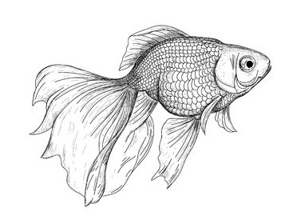

A Lion seeing a fine plump Nag, had a great mind to eat a bit of him, but knew not which way to get him into his power. At last he bethought himself of this contrivance: he gave out that he was a physician, who, having gained experience by his travels into foreign countries, had made himself capable of curing any sort of malady or distemper incident to any kind of beast, hoping by this stratagem to get an easier admittance among cattle, and find an opportunity to execute his design. The Horse, who smoked the matter, was resolved to be even with him; and, so humouring the thing, as if he suspected nothing, he prayed the Lion to give him his advice in relation to a thorn he had got in his foot, which had quite lamed him, and gave him great pain and uneasiness. The Lion readily agreed and desired he might see the foot. Upon which the Horse lifted up one of his hind legs, and, while the Lion pretended to be poring earnestly upon his hoof, gave him such a kick in the face as quite stunned him, and left him sprawling upon the ground. In the mean time the Horse trotted away, neighing and laughing merrily at the success of the trick, by which he had defeated the purpose of one who intended to have tricked him out of his life.
A man was angling in a river, and caught a small Perch; which, as he was taking off the hook and going to put into his basket, opened its mouth, and began to implore his pity, begging that he would throw it into the river again. Upon the man's demanding what reason he had to expect such a favour?—'Why,' says the Fish, 'because, at present, I am but young and little, and consequently not so well worth your while as I shall be if you take me some time hence, when I am grown larger.'—'That may be,' replies the man, 'but I am not one of those fools who quit a certainty, in expectation of an uncertainty.'
The Camel presented a petition to Jupiter, complaining of the hardship of his case in not having, like bulls and other creatures, horns, or any weapons of defence, to protect himself from the attacks of his enemies, and praying that relief might be given him in such manner as might be thought most expedient. Jupiter could not help smiling at the impertinent address of the great silly beast, but, however, rejected the petition; and told him that, so far from granting his unreasonable request, henceforward he would take care his ears should be shortened, as a punishment for his presumptuous importunity.
A Kite had been sick a long time, and finding there were no hopes of recovery, begged of his mother to go to all the churches and religious houses in the country, to try what prayers and promises would effect in his behalf. The old Kite replied—'Indeed, dear son, I would willingly undertake any thing to save your life, but I have great reason to despair of doing you any service in the way you propose: for, with what face can I ask any thing of the gods in favour of one whose whole life has been a continual scene of rapine and injustice, and who has not scrupled, upon occasion, to rob the very altars themselves?